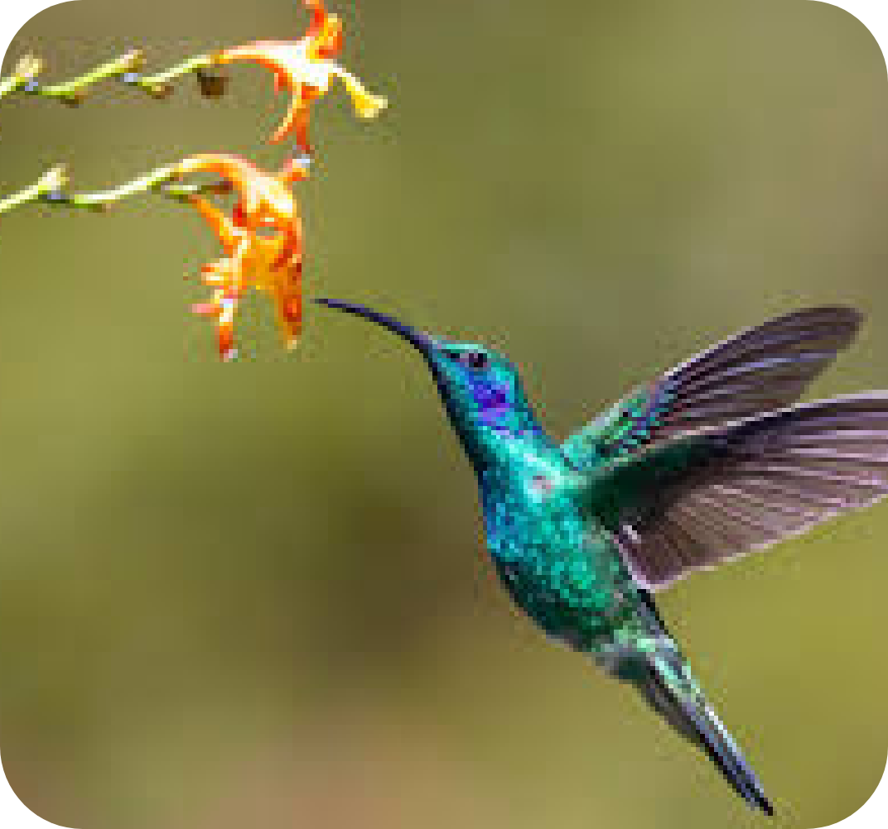

ABEJA

Las abejas son los polinizadores más importantes del mundo. Tienen pelitos en todo su cuerpo donde se les pega el polen. Cuando vuelan de una flor a otra, dejan parte de ese polen y así ayudan a que las plantas se reproduzcan.
Viven en colmenas muy organizadas y trabajan en equipo para buscar néctar, polen y producir miel.
DATO CURIOSO
Una sola abeja puede visitar hasta 100 flores en un solo viaje.
Mariposas
Las mariposas usan su larga trompa enrollada para beber néctar. Mientras se posan, el polen se pega a sus patas y cuerpo.
Prefieren flores coloridas, especialmente rojas, naranjas y moradas. Son activas de día y vuelan suavemente de flor en flor.
DATO CURIOSO
Hay más de 20,000 especies de mariposas en el mundo.
Colibríes
Estas aves diminutas son muy rápidas. Pueden volar en todas direcciones, incluso hacia atrás. Al introducir su largo pico en flores profundas, el polen se les pega en la cabeza y el cuello.
Les gustan las flores tubulares y de colores brillantes.
DATO CURIOSO
Un colibrí puede visitar hasta 2,000 flores al día.
Murciélagos
Algunos murciélagos, especialmente en zonas tropicales, polinizan flores grandes que se abren de noche. Tienen un gran sentido del olfato y pueden volar largas distancias.
Son clave para plantas como el agave, del que se obtiene el tequila.
DATO CURIOSO
Los murciélagos polinizan más de 300 especies de plantas.
Moscas
Aunque muchas personas no lo saben, varias especies de moscas, como las moscas de las flores (sírfidos), son excelentes polinizadores.
Suelen visitar flores pequeñas y de olor fuerte.
DATO CURIOSO
Algunas flores imitan el olor a fruta podrida para atraer moscas polinizadoras.
Escarabajos
Son de los polinizadores más antiguos. Se les conoce como “polinizadores primitivos”. Prefieren flores grandes, abiertas y con muchos pétalos.
A veces comen partes de la flor mientras ayudan a mover el polen.
DATO CURIOSO
Algunos escarabajos polinizadores también ayudan a descomponer materia orgánica.